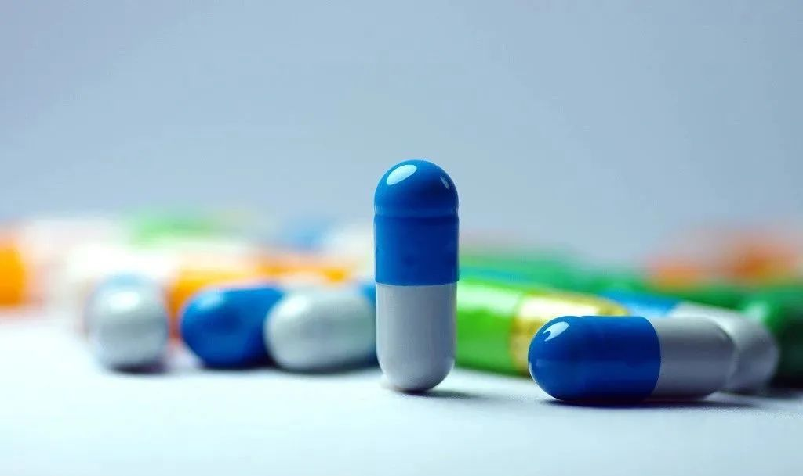
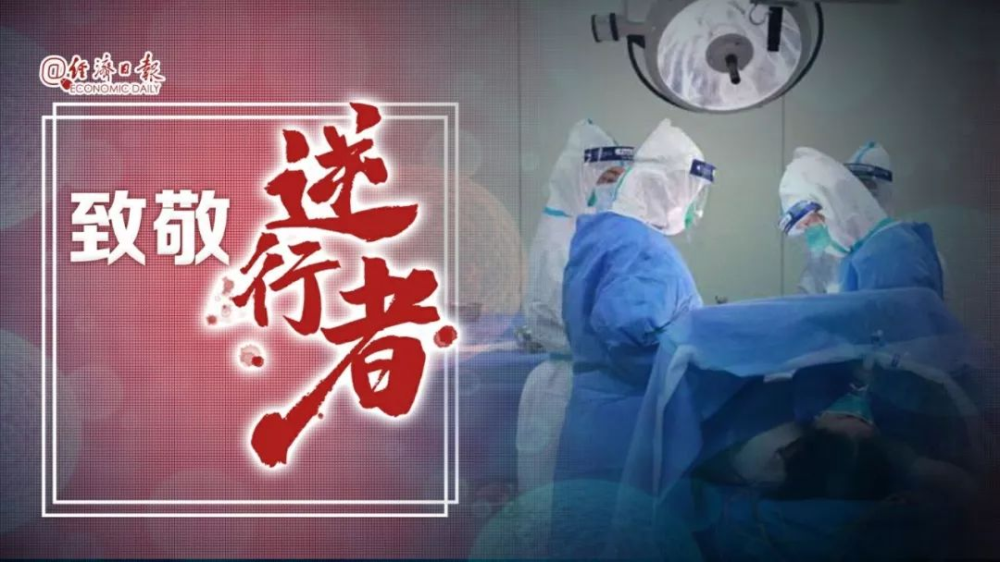

上海援鄂医疗队：我们不能治好肺炎就不管了
原文链接 备份链接 澎湃新闻记者 李佳蔚 郁斐 制图 进驻武汉第一天，上海医疗队就知道，要治愈的不仅是患者身体，治愈出院也不会是服务终点。 时至今日，事实证明他们做得不赖。 2月7日，上海中山医院第四批医疗队进驻武汉大学人民医院东院，整建 …
这是驰援武汉的复旦大学附属中山医院医疗队领队朱畴文的谈话录音，讲述了他和他的团队从抵达武汉，进驻医院到参与治疗过程的经历，在谈到武汉和武汉人时，他几度声音哽咽。关于防护物资、关于病人收治、关于疫苗、关于心理压力、关于人文关怀……他一一道来，真实感人。
他说，作为一名医生，救治病人、抗击疫情是我们的职责，我们应该来，我们责无旁贷。疫情肯定会过去的，只不过根据疾病的发展还需要一定的时间，我们要坚持下去，大家都会坚持的。
作家方方在昨天的《武汉日记》中评论说，这段录音“非常理性，非常克制，也非常客观”“这是有慈悲心肠的医生，是有大爱仁心的医生”。

以下是医生朱畴文的自述：
抵达武汉
我是北大生物系84级医学预科的朱畴文，现在复旦大学附属中山医院工作，担任副院长。这次我是带医疗队到武汉进行疫情救治工作。
6号晚上8:00接到国家卫健委指令，让我们组织一支130人的队伍，包括30名医生，100名护士。当时我们医院就积极准备，组织了30名医生，100名护士，同时也有6人的行政小组。我是医生，也是行政小组牵头人，6名行政人员里有4人是医生。医院还准备了一些防护物资、个人用品，随机托运700多箱，总重量是8.98吨。
我们7号下午4点乘坐东航330的包机飞武汉。抵达武汉天河机场的时候，一架飞机也没有，就我们一架降落了。整个机场的灯是为我们开的，机场商店都是关着的。他们说你们走了以后我们还要熄灯，想想有一种说不出的感觉。到了武汉我们直接去宾馆，货物由武汉方面运过来，一件不少。沿路过来，过长江大桥看见黄鹤楼，大家都没有说话，因为街上没有车、没有人，又是雨夜，我们的心情非常复杂。
接管病房
我们分配的任务是去武汉大学人民医院的东院区接管两个传染病病房，共80张床位。武汉大学人民医院又称湖北省人民医院，它的东院区原来有1700多张床位，已经把其中的800张改造成隔离病房，不是ICU，是专收重症的隔离病房。他们非常辛苦，在几天内逐渐改造，开始200张、后来400张、最后落成800张。
抵达武汉第2天我们去了医院，看看场地，跟那边接头，加上我们共有7支医疗队在那边，跟人民医院的同事一起，分管800张床位。进入新的环境，所有东西都得从头练起。进病房看的时候，大家心里真的是有点瘆得慌，因为隔了门就是个传染区。虽然有两个通道，一个是清洁通道，一个是污染通道，清洁通道和污染通道之间有三个区：清洁区、缓冲区、污染区，有两道门隔着，但这些都是非常简陋的，不是感应门，要用手推，风一吹就会吹开。这样的情况下，即使我们从医好多年，还是比较紧张的。
出发的时候领导对我有要求，零感染。说带多少人去，就带多少人平平安安回来，安全防控是我的头等大事情。看了场地，也看了他们的一些物品，我觉得还是有一定的差距。我就再一次强调安全，演练怎么穿防护服，大家怎么互相帮助。
9号下午2:00，我们接管了这两个病房。到病房看了物资以后，我不是太乐观。人民医院已经用上捐赠物品了，好多品牌、规格、型号都是不一样的，而且有些我觉得是不能代替传染病房的，但他们就用了。人民医院的医生从春节前1月中旬一直熬到现在也没休息过，他们医生护士的配比比我们要少得多，但是也都坚持下来了，他们都不是传染科的。我接管的那两个病房，一个是心内科的，一个是神经内科，但他们完全按照传染科来用，而且做得非常辛苦，的确是需要援助的。
我们的防护用品带了10天的量， 9号去上岗的时候，我给大家说，你先看人民医院的东西能不能用，能用的就用，不能用的就用我们带来的。不是说信不过他们，实在是突然短时间内这么大需求量和消耗量情况下，没有一家医院、没有一个城市能够完善的提供这些足够的防护用品的，这一点必须是要理解的。但是目前物资短缺，尤其是防护用品不够的情况是得到了极大的缓解，因为国家的生产以及采购量，捐赠量也越来越多，所以从物资这方面来看，绝对是越来越好。但有一些临床上的东西，我们后方也继续运。

病房的情况刚才讲过，是普通病房改造的，跟上海传染病总院相比来说，还是比较简陋的，但你必须用，也没有任何好说的，我必须上。仪器不够，氧气量不足，所有的管道氧气都不是为800张床要大流量吸氧而配备的。后来要用钢瓶，钢瓶只是运到楼下，护士推进去，所以是非常辛苦。现在氧气供应量比以前有所好转，仪器也是越来越多。
我们的任务就是要把重症病人收进来，武汉在社区都是有重症病人的。他们没地方去！所以就调集了全国的力量，把各大医院的普通病房改造成隔离病房、重症病房。上面的命令就是应收尽收、应治尽治，要把还留在社区的一些重症病人，全部收进医院，也要把一些在其他医院的重症病人全部转到我们这几家医院的重症病房来。
那些轻症的病人去其他的医院，或者去方舱。现在建了这么多方舱医院，目的就是要集中管理，不能让这些病人散落在社会上。因为每一个人都是传染源，有些人的确需要在医院里得到救治。我觉得这个措施从执行层面上是很好的，这些病人的确是收上来了。
与医院磨合
我们到了一个全新的环境，跟人民医院的磨合也是非常重要的。我们不熟悉他们病例的系统，不熟悉他们的流程。人民医院安排了原来在病房的护士长和一位医生陪着我们一起来做，做一些协调和联系的工作，磨合一个周非常好。现在他们也没走，就继续在这里。
原来我们领队会议是每天开一次，现在因为情况的好转也减少了次数，后来就固定周一、周四晚上开。我们都有微信群，有什么情况就及时在群里沟通。一开始，我们7支医疗队，大家的脾气不一样，习惯不一样，处事风格也不一样，在开领队会议的时候拍桌子吵什么都有。我觉得这都是为了工作，后来越来越和谐，也理解人民医院的苦衷，他们很难，他们很难。
从我带的医疗队管理的病房情况来说，我们已经进入到正轨。虽然这是一个陌生的病毒，但并不是说完全束手无策，还是有一定规律可循的。虽然还是有很多的空白点或者疑点不清楚，但在临床处理上，大家都觉得越来越有心得了。
关于病人收治
我带的130人的队伍中，30名医生主要来自于呼吸科，重症医学科，还有感染科。另外，考虑这个疾病会有多脏器的问题，我们还带了心内科、肾内科、神经内科、消化科、麻醉科、急诊科的医生。另外100名护士，有40名是来自于我们ICU的，还有些是来自其他病房的。年纪最小的工作两年半，100名护士里有9名男护士。我们可以说是出动了大量的精锐，这支队伍非常值得信任。
我们所收的病人是由武汉前线指挥部决定，他们从各个社区收病人，然后做紧急短暂的评估，轻症病人转到方舱，重症的就到我们医院来，或者到其他大的医院去。
关于治疗，实际上各种各样的方法，根据国家卫健委的诊疗方案第1版到第6版不断推进。病人如果出现好转，两次核酸检验是阴性的，或者临床上症状也没有，就要出院。病人回家要由网格联络员领回去，他到那边报到，然后再回家。后来出现有些病人出院又有阳性或者有临床症状的情况，现在规定出去的不直接回家，找固定地点隔离两周，然后再回家，也有些病人转到方舱医院继续治疗。
我们80张床位目前收治的情况大概是70张，最高的时候达到过80张。在我们手上有6个病人去世，有些是原来留下来的，在新进来的病人中去世的不多。医生早晚查房，要穿着隔离服进去，开出医嘱，然后护士送进去，再来用药、领药等等。关于抢救，终末期的这种抢救，不是你想救就能救回来了，病人除了氧分压不高、氧和很差以外，还有其他脏器问题，原来有基础性疾病的差一点，的确是这样。
医院给每个病房配了4部手机，两部在里头，两部在外头，随时可以通过手机来联系，这个手机也是要及时联系病人家属的。我们的病房不让家属探视，也没有陪护，如果一些操作要签字，就通过微信、通过语音，然后截屏确认。如果病人去世了，也是通过这个途径告诉他们。目前来说，隔离区和清洁区的交流工作还好。
根据上级指示，医院里每天要做报表，收多少个病人、多少个重症、多少个危重症，出院多少，有多少人进行机械通气，或者有多少人进行了插管。对于插管，实际上各有利弊吧。我们对插管还是非常谨慎的。我们现在想的是如何关口前移，如何防止重症的病人发展到危重症，从而来避免插管，更避免启用ECMO。ECMO现在很红，但对于新冠肺炎病人来说，用ECMO不像处理其他疾病科那么神奇，回过来了没几个，成功率百分之十几。
诊疗方案1~6版都有中医药的推荐方案，尤其是一些中草药的方剂。我们病房也有些病人在用，有些病人从方舱就在用，那么也让他在这继续用。
医学的人文关怀
我们接收病房时病人症状很重，人民医院的医护人员力量不足，他们提供医疗都来不及，所以对这些病人照护肯定是不够的。我们进到隔离区以后，很难过的。他们是重症病人，是需要照护的。但怎么照护呢？病人互助，有但很少。一些病人在床上插着管不能动，吃东西没法吃，喝水也没法喝。即使可以走动的，也就是三餐。衣服怎么洗？卫生怎么搞？都是问题。所以我们的医护人员除了看病以外，帮他们个人打扫卫生，还送去了内衣、毛巾、肥皂、拖鞋，还有很多吃的东西。帮病人打打电话，跟家里通话、通视频。老太太躺床上，谁跟她说话，老头子走不动，谁跟他聊几句。所以医学的人文关怀，也就像我们这么做吧。现在情况好多了，逐渐地让他们改善了环境等等。
我们在病房进行了分区，重症里的重症搬到一个地方，轻症的让他们互相照顾说说话。整个来说，病人有进有出，是一个平衡的状态。
关于队员的压力
谈到队员的压力，肯定有。我也有压力，我的压力就是零感染，所以我再三强调安全，没有足够的防护，绝对不准轻易妄动，不准硬冲，大家都接受了。并不是我们退缩，只有做好自己的防护，才能够更加安心地做好各种诊疗活动。其中有孩子是蛮紧张的，刚刚20多岁。穿着防护服，戴着三层手套，戴着护目镜，再带个面罩，人全闷在里头，再加上脚套，你摸脉搏都摸不到，任何操作都必须非常小心，所以真的是很难的，尤其是护士们很辛苦的。
前一个周我们有三个晕倒的，一出来就倒了。还有一个女护士，在里面吐了，吐在口罩里。吐出来的时候，他脑子里想：拿掉口罩，新冠肺炎；呕吐物不慎吸进去，吸入性肺炎，哪条路都不好。都是孩子啊！
我们队员里头也有几个发低烧的，37度2左右，然后就退烧了，就这么过了。一旦有不舒服在家休息。我们一人一个单间，水、饭送到门口，不要出来自己待着，但是我们和他们都是密切接触的。如果真有一个感染的，我们整个队伍都得隔离。现在进入正轨了，大家按时上班，来回坐班车。我们驻地和医院之间有12公里。我要求工作完，洗了澡马上回来，别在医院待着，回家休息。我们班次排的很密，司机师傅也很辛苦。
我们能够保证大家生活上没有什么问题。医院里提供三顿饭，酒店里提供三顿饭，还有很多捐赠吃的这些物资，肯定是足够的。有几天肉食品少了，荤食品少了，悄悄地呼吁了一把，真有能人就给我们送肉来了，现在好心人不少，各显神通。
关于不同治疗方案
现在我们治疗的结果怎么样？我不好说。总体情况只有到结束了才知道，就我们治疗心得来说，情况是好转的，而且入院病人也越来越少。重症病房在扩大，社区收治应该告一个段落。我们现在来的病人，不少是从方舱过来的。现在对方舱病人的治疗，也要求输液，要求做CT。为了不让他们发展成重症，轻症病人还是需要治疗。轻症病人回到社区也是要进一步观察随访的。
刚才讲到中医药，真的不好说。因为我觉得中医论证的方法好像跟西医不一样，所以不便做过多的评判。你能用病人也愿意用就可以用。至于它的效果怎么样，看最后效果。
疫苗怎么样？我觉得疫苗不可能在短期内出来的。康复者血浆治疗到底效果怎么样？也是走一步看一步的，不宜过多的夸大，因为没有经过一个很严格的临床实验。这个临床实验怎么去设计？在每一个阶段病毒都可能有变异，病毒变异所产生的抗体可能就不一样。所以怎么样去评估都不好说。可以说新冠没有特效药。

面对我们存在的很多疑点，未知病毒所造成的感染，或者造成一些多脏器的问题，我们可以尝试从已知的原理和原则上开展治疗。但这种治疗能不能在我们的治疗的过程中进行很完美的（RCT）临床随机对照研究，甚至双盲，我觉得这是需要打问号的。但并不是说那些观察性的治疗或者单臂的这种实验性的治疗就没有意义。我们需要不断的总结，即便是观察性的研究，但这些总结所得出来的结论，它所提供的证据的强度是不高的。现在来说有一定疗效，推荐使用，我们也用。但是到底怎么样去做临床研究，还是要深入考虑的。
现在PI很多，如果合格的病人量不足的话，研究结果的把握度是不够的，对临床到底有多大的指导价值，也是一个问题。我觉得我们应该要舍弃点什么？我指的舍弃是在临床的研究中不要这么多的PI了。国家来做RCT，把所有的病人都统筹起来做。因为药用来用去就这么几种，一个人去开展一个研究，你要做一个多中心的，另外一位大佬要开展一个多中心的，绝对是冲突的，病人上面是冲突的，管理上也是冲突的。
这个病毒本身的确存在着很多不清楚的地方，而我们的诊断也有很多并不尽善尽美的地方。如果这个病人是阴性的，你就判定他是阴性吗？比如说做咽试子是阴性，你能相信他就是阴性了吗？试剂的敏感性，不是100%的。操作时候的取样不一定能够取到的，取到的病毒量也可能在检测标准以下。从临床角度来讲，病人症状消退，CT有所缓解得出来是阴性的话，就应该认为好转。是不是“痊愈”，打个引号。现在有些病人出院以后又复阳了，是不是他出院时的阴性就是个假阴性，但临床上又没症状。所以真的有很多的未知。
用激素，什么时候用？上多少激素？用氧疗，到底用多少？增加免疫力的药，比如打胸腺肽等等，还有些病要不要抗感染？这都是临床一线要根据情况做评估的。国家卫健委的诊疗方案给了，但你每一步的行动还是需要一支团队在做的。所以这就是为什么派有经验的、能够多个合作的团队在一起，刚出茅庐的医生是搞不定的。
现在到底什么药好？谁也不知道。反正推荐使用你就可以用，当然也有效果。但病毒性的疾病，包括新冠病毒在内，是会有自愈性的，自己就恢复了。到底是我们用药的原因，还是它本身自愈的原因，都可以做进一步的探讨。我是西医，从临床研究的角度来讲，我是推崇RCT的。现在说起来，严格执行RCT的就一个药，就是瑞德西韦，但他有双盲的，4月底才揭盲。
关于复工情况
我们在前方，中山医院上海本部给我们很大支持，不断送东西，包括N95口罩、防护服等都运过来。但中山医院也面临着复工的问题。我离开的时候，我们医院就开普通门诊，所有的手术除了急诊以外都停掉了。这两天开始恢复，有专家门诊也有普通门诊，也要收病人入院、要手术。尤其是对癌症的病人，春节到现在一个月了，怎么办？你不能一直拖下去。现在我们要恢复了，湖北尤其是武汉地区，目前还处于这种严格的状态。国内的其他地区应该要恢复，我个人认为应该要谨慎的恢复到正常的这种状态。
个人认为流行病学的调查很重要，但个人的诚实、个人的不隐瞒更加重要。这不是问一个问题就能问得出来的。如果问出来是假的，你对他有什么惩罚措施吗？
关于支援的感受
要说一下感受，我觉得蛮苦的。不是指我们医疗队，而是指武汉的老百姓。曾经有媒体采访过我，有什么心路历程？我说，我再也不愿意以医疗队领队的身份再到武汉来。再到武汉的时候，我应该是个游客，而不要再以医疗队领队的身份。作为一名医生，作为一个医院的领导，救治病人、抗击疫情是我们的职责，我们应该来的。我们就是换了个城市，换了个医院，在做医疗工作。虽然有风险，但还是有各种手段可以把这种风险控制住。这是医生的职责，我们责无旁贷。
我想说谢谢大家对我们的关心，各位有心人、好心的机构给我们大量捐赠。现在已经进入正轨，国家是有渠道、有办法维持，并且改善我们现在的供应的。应该说医疗这方面的情况在好转，我们的供应在好转，我们的病人也在好转。
不少人问我，包括我女儿，什么时候能回来？我真的不知道。要根据疫情的发展。现在我们的排班还可以，根据自己的情况做调整，希望大家能够在前线这么一个高度紧张的环境中，得到合理的休息，得到合理的舒缓。这的确是我作为一个领队最挠头的事情，但幸好我有一支非常出色的队伍，真的非常感激他们，荣誉应该属于他们。
这样的疫情肯定会过去的，这么严重的情况肯定会过去。而且现在已经在向好的方面发展，只不过根据疾病的发展还需要一定的时间，我们要坚持下去，大家都会坚持的。

来源：经济日报微信公众号（ID：jjrbwx）
录音整理：王琳、吉亚矫
编辑：闫伟奇
审核：王荆阳
主编：王玥
监制：姜帆
本文内容系录音整理，转载请联系原作者。

原文链接 备份链接 澎湃新闻记者 李佳蔚 郁斐 制图 进驻武汉第一天，上海医疗队就知道，要治愈的不仅是患者身体，治愈出院也不会是服务终点。 时至今日，事实证明他们做得不赖。 2月7日，上海中山医院第四批医疗队进驻武汉大学人民医院东院，整建 …
原文链接 备份链接 摘要：截至2月17日，全国已有3.2万余名医护人员支援湖北，支持湖北实现“应收尽收、应治尽治”。2月7日，其中一支医疗队的领队、复旦大学附属中山医院副院长朱畴文率领的136人队伍奉调入鄂，一天后接管了武汉大学人民医院东 …
原文链接 [备份链接]() *************▲ *************2020年2月19日，在武汉市泰康同济医院，军队医护人员互相整理防护服。 （新华社/图） 全文共9028字，阅读大约需要20分钟。 此次派出的县级医院 …
原文链接 备份链接 陈德昌说，金银潭医院的重症病人情况比较严重。在他工作的病房里，29个病人有16个都上了呼吸机，同时面临物资短缺的难题。当他们作为上海医疗队进驻时，原有医护人员已连续工作近一个月了。这次出征，比想象中要艰苦。 57岁的陈 …
原文链接 备份链接 编者按： 本文作者刘韬滔为北京医院外科ICU主治医师，进入援鄂国家医疗队名单后，二月七日从北京去往武汉，进行医疗救助。 二月八日晚上九点坐大巴车从汉口驻地出发。半小时后进入蔡甸区，车在一路口红灯前停下。我转头望向窗外， …